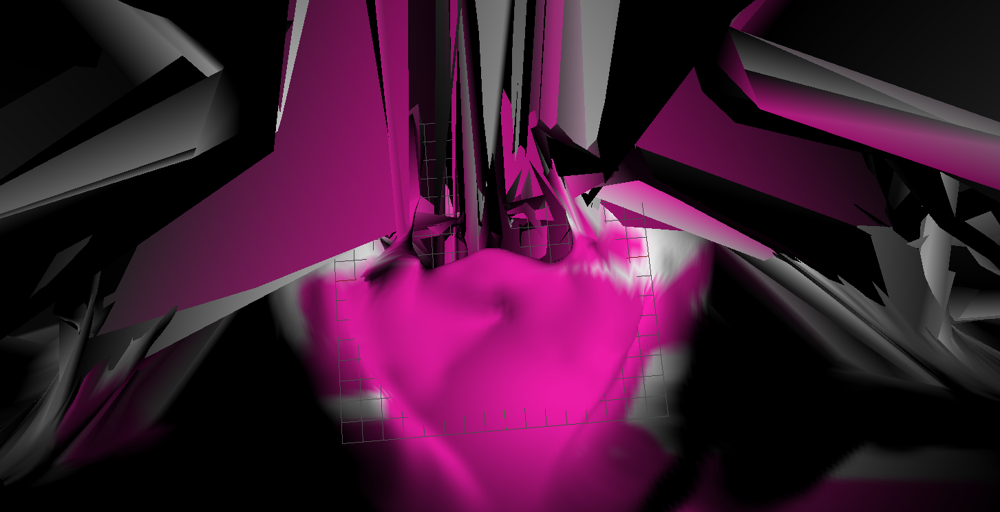
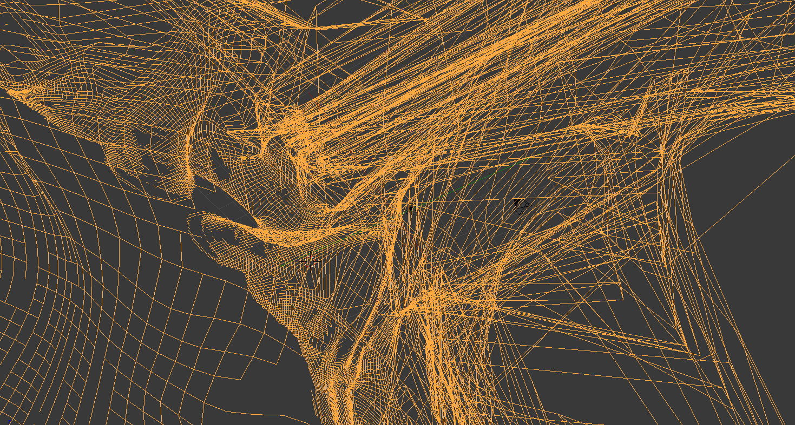
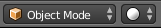
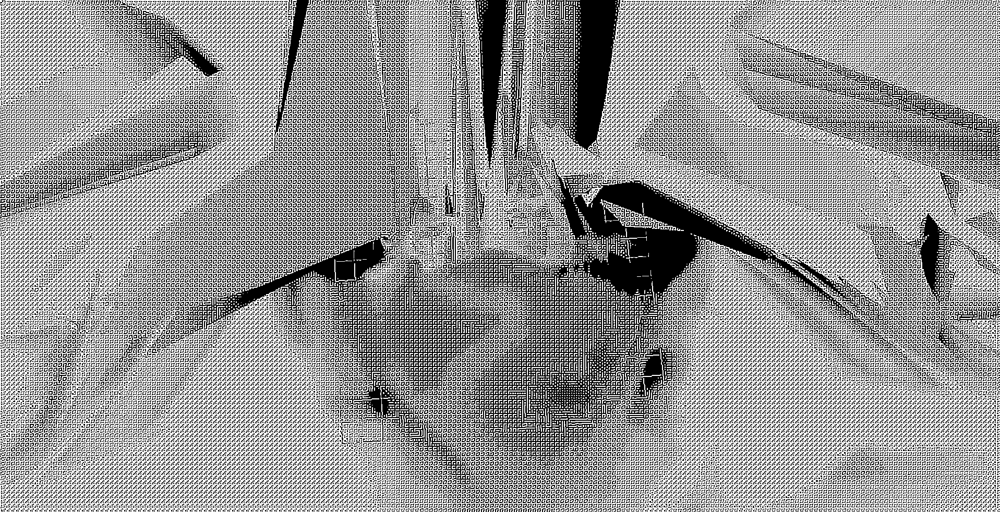
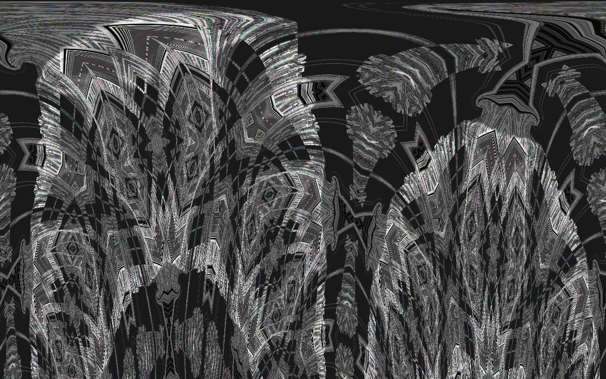

Recette graphique
Étapes par étapes
Ingrédients
:
- 64 Stitches
- SculptGL
- Blender
- Texturing
- Processing
- Alchemy
Étape 1:
Allez sur 64sts.com puis créez un motif.
Cliquez sur Download Swatch
pour télécharger le motif.
Étape 2:

Accédez ensuite au site SculptGL.com.
Importez le motif en cliquant sur Rendering/Matcap/Import(jpg,png...)

Maintenant, utilisez les outils,
créez des formes,
laissez parler votre imagination!
Exportez ensuite votre scultpure
Files (import/export)/Save .obj
Étape 3:
Installez Blender puis
importez votre scultpure
File/Import/Wavefront (.obj).
Sélectionnez Wireframe
dans le menu Viewport Shading
situé à côté du menu avec "Object mode" séléctionné.
Prenez ensuite une capture d'écran du rendu.

Étape 4:

Téléchargez Texturing:
github.com/ivangrozny/TexTuring
Vous aurez également
besoin de Processing pour ouvrir
Texturing.
Glissez votre capture d'écran
dans le logiciel.
Modifiez les paramètres comme bon vous semble. Cliquez sur Render pour voir un aperçu
puis cliquez sur Export.
Étape 5:

Pour finir, ouvrez votre
image dans Pixellitor.
Ouvrez le menu déroulant
Effects et testez
les effets en selectionnant
Random settings pour avoir
des paramètres aléatoires.
Il ne vous reste plus qu'à
faire place à votre créativité.